39 Using git and GitHub

In the previous chapter, we discussed why we should consider learning to use git and GitHub as part of our workflow when our projects include data and/or coding. In this chapter, we will begin to talk about how to use git and GitHub. We will also introduce a third tool, GitKraken, that makes it easier for us to use git and GitHub.
39.1 Install git
Before we can use git, we will need to install it on our computer. The following chapter of Pro Git provides instructions for installing git on Linux, Windows, and MacOS operating systems: https://git-scm.com/book/en/v2/Getting-Started-Installing-Git.
If you are using a Mac, it’s likely that you already have git — most Macs ship with git installed. To check, open your Terminal app. The Terminal app is located in the Utilities folder, which is located in the Applications folder. In the terminal app, type “git version”. If you see a version number, then it is already installed. If not, then please follow the installation instructions given in the link to Pro Git above.

Figure 39.1: Checking git version in the MacOS terminal.
39.2 Sign up for a GitHub account
We have already alluded to the fact that git and GitHub are not the same thing. You can use git locally on your computer without ever using GitHub. Conversely, you can browse GitHub, and even do some limited contributing to code, without ever installing git on your computer (e.g., see Contributing to R4Epi)). However, git and GitHub work best when used together. You don’t need to download anything to start using GitHub, but you will need to sign up for a free GitHub account. To do so, just navigate to https://github.com/
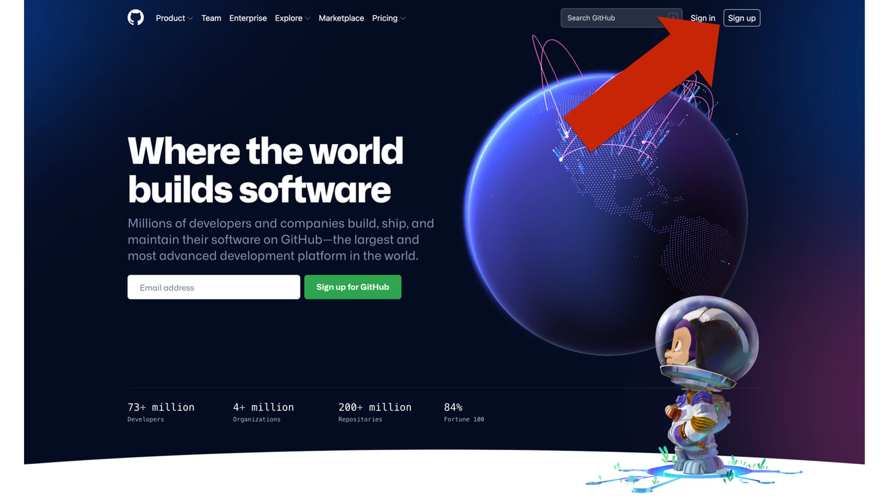
39.3 Install GitKraken
Git is software for our computer. However, unlike most of the software we are used to using, git does not have a graphical user interface (GUI - pronounced “gooey”). In other words, there is no git application that we can open and start clicking around in. Instead, by default, we interact with git by typing commands into the computer’s terminal – also called “command line” in GitHub’s documentation – like we saw in 39.1. The commands we type to use git kind of look like their own programming language. In our experience, interacting with git in the terminal is awkward, inefficient, and unnecessary for most new git users. And learning to use git in this way is a barrier to getting started in the first place. 😩
Thankfully, other third-party vendors have made excellent GUI’s for git that we can download and use for free. Our current favorite is called GitKraken. To use GitKraken, you will first need to navigate to the GitKraken website (https://www.gitkraken.com/). If it helps, you can think of git and GitKraken as having a relationship that is very similar to the relationship between R and RStudio. R is the language. RStudio is the application that makes it easier for us to use the R language to work with data. Similarly, git is the language and GitKraken is the application that makes it easier for us to use git to track versions of our project files.
Before you use the GitKraken client, you will need to sign up for an account. It may say that you need to sign up for a free trial. Go ahead and do it. The free trial is just for the “Pro” version. At the end of the free trial, you will automatically be downgraded to the “Free” version, which is… free. And, the free version will do everything you need to do to follow along with this book.

Next, you will need to click on the “Try Free” button. Then, download and install the GitKraken Client to your computer.

As you are installing GitKraken, it should ask you if you want to sign up with your GitHub account. Yes, you do! It will make your life much easier down the road. If you didn’t sign up for a GitHub account in the previous step, please go back and do so.
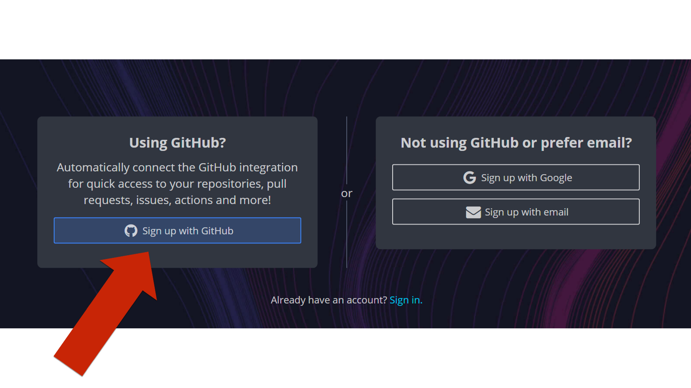
Then click the green Continue authorization button.
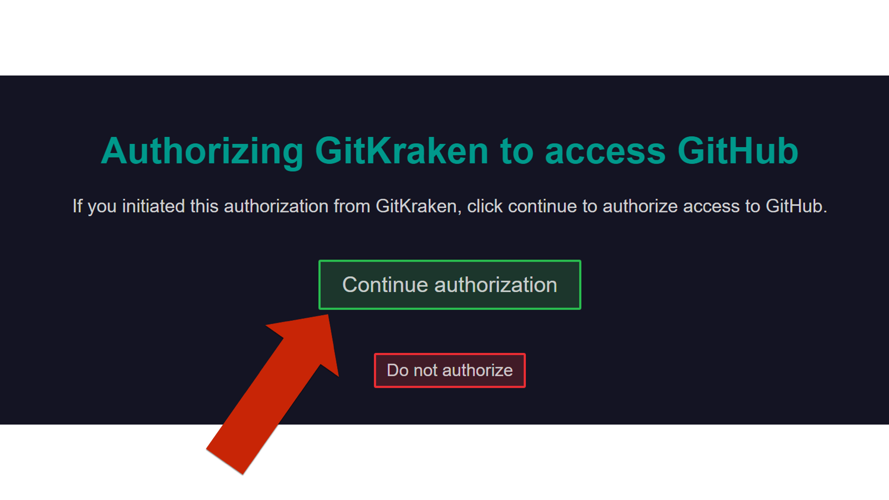
Then, you will be asked to sign into your GitHub account – possibly using your two-factor authentication. When you see the success screen, you can close your browser and return to GitKraken.

The next thing you will do is create a profile. After you create a profile, you will be asked if you want the Repo Tab first or the Terminal Tab first. We recommend that you select the Repo Tab option.

Once you have installed Git and GitKraken, and you’ve created your GitHub account, you will have all the tools you need to follow along with all of the examples in this book. Speaking of examples, let’s go ahead and take a look at a couple now.
39.4 Example 1: Contribute to R4Epi
If you haven’t already done so, please read the contributing to R4Epi portion of the book’s welcome page). This will give you a gentle introduction to using GitHub, for a very practical purpose, without even needing to use git or GitKraken.
39.5 Example 2: Create a repository for a research project
In this example, we will learn how to create our very own git and GitHub repositories from scratch. We can immediately begin using the lessons from this example for our research projects – even if we aren’t collaborating with others on them. Remember, there are at least four overarching reasons why you should consider learning to use git and GitHub as part of your workflow for your projects, and collaboration is only one of them. Not to mention the fact that it is often useful to think of our future selves as other collaborators, which we have mentioned and/or alluded to many times in this book.
There are many possible ways we could set up our project to take advantage of all that git and GitHub have to offer. We’re going to show you one possible sequence of steps in this example, but you may decide that you prefer a different sequence as you get more experience, and that’s totally fine!
This example is long! So, we created a brief outline that you can quickly reference in the future. Details are below.
Step 1: Create a repository on GitHub
Step 2: Clone the repository to your computer
Step 3: Add an R project file to the repository
Step 4: Update and commit gitignore
Step 5: Keep adding and committing files
Step 1: Create a repository on GitHub
The first thing we will do is create a repository on GitHub. Repositories are the fundamental organizational units of your GitHub account. Other cloud storage services like Dropbox are organized into file folders at every level. Meaning, you have your main Dropbox folder, which has other folders nested inside of it – many of which may have their own nested folders. Your GitHub account also stores all your files in file folders; however, the level one folders — those that aren’t nested inside of another folder — are called repositories (represented by the book icon in the image below and on the GitHub website). Typically, each repository is an entire, self-contained project. Like a file folder, each repository can contain other folders, code files, media files, data sets, and any other type of file needed to reproduce your research project.
Figure 39.2: GitHub repositories compared to Dropbox.
⚠️Warning: Just because we can upload data to GitHub doesn’t mean we should upload data to GitHub. Often, the data we use in epidemiology contains protected health information (PHI) that we must go to great lengths to keep secure. In general, GitHub is NOT considered a secure place to store our data and should not be used for this purpose. Below, we will demonstrate how to make sure our data isn’t uploaded to GitHub with the rest of the files in our repository.
To create a new repository in GitHub, we will simply click the green Create repository button. This button will look slightly different depending on where we are at in the GitHub website. The screenshot below was taken from Arthur Epi’s (our fictitious research assistant) main landing page (i.e., https://github.com/).
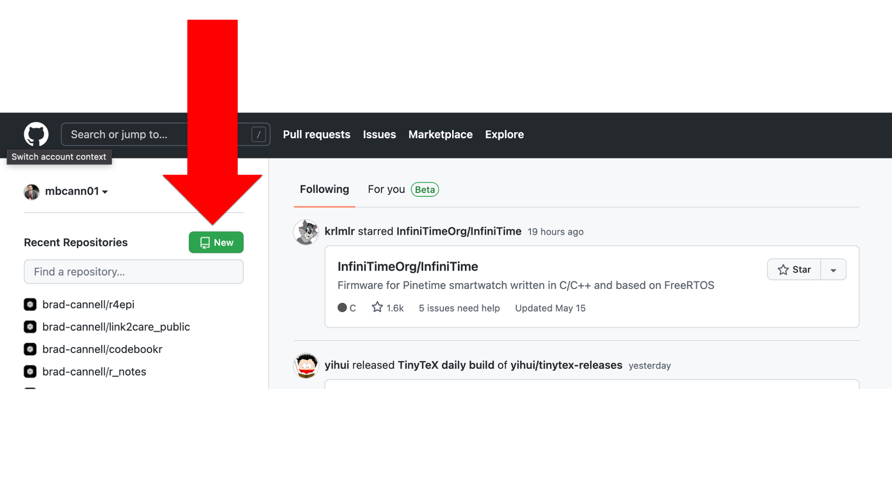
After clicking the green Create repository button, the next page Arthur will see is the setup page for his repository. For the purposes of this example, he will use the following information to set it up.
Repository name: As the on-screen prompt says, great repository names are short and memorable. Further, the repository name must be unique to his account (i.e., he can’t have two repositories with the same name), and it can only include letters, numbers, dashes (
-), underscores (_), and periods (.). We recommend using underscores to separate words to be consistent with the object naming guidelines from [coding-best-practices]. For this example, he will name the repositoryr4epi_example_project.Description: The description is optional, but we like to fill it in. Arthur’s description should also be brief. Ideally it will allow others scanning our repository to quickly determine what it’s all about. For this example, the description will say, “An example repository that accompanies the git and GitHub chapters in the R4Epi book.”
Public/Private: We can choose to make our repositories public or private. If we make them public, they can be viewed by anyone on the internet. If we make them private, we can control who is able to view them. At first, you may be tempted to make your repositories private. It can feel vulnerable to put your project/code out there for the entire internet to view. However, we are going to recommend that you make all of your repositories public and be thoughtful about the files/documents/information you choose to upload to them. For example, we NEVER want to upload data containing information with PHI or individual identifiers in it. So, we will often need to figure out a different way to share our data with others who legitimately need access to it, but we can often use GitHub to share all other files related to the project. Making our repository public makes it easier for others to locate our work and potentially collaborate with us.
Add a README file: A README file has a special place in GitHub. Under the hood, it is just a markdown file. No different than the markdown files we learned about in the chapter on R markdown. However, naming it
READMEgives it a special status. When we include a README file in our repository, GitHub will automatically add it to our repository’s homepage. We should use it to give others more information about our project, what our repository does, how to use the files in our repository, and/or how to contribute. So, we will definitely want a README file. Arthur may as well go ahead and check the box to create it along with his repository (although, we can always add it later).Add .gitignore: We will discuss
.gitignorelater. Briefly, you can think of it as a list of files we are telling GitHub to ignore (i.e., not to track). This gets back to versioning, which we discussed in the Versioning section of the introduction to git and GitHub chapter. For now, Arthur will just leave it as is.License: The GitHub documentation states that, “Public repositories on GitHub are often used to share open-source software. For your repository to truly be open source, you’ll need to license it so that others are free to use, change, and distribute the software.”12 Because we aren’t currently using our repository to create and distribute open-source software (like R!!), we don’t need to worry about adding a license. That isn’t to say that you won’t ever need to worry about a license. For more on choosing a license, we can consult the GitHub documentation or potentially consult with our employer or study sponsor. For example, our universities have officials that help us determine if our repositories need a license.

Now, that he has completed all the setup steps, Arthur can click the green Create repository button. This will create his repository and take him to its homepage on GitHub. As you can see in the screenshot below (you can also navigate to the website yourself), GitHub creates a basic little website for the repository. The top middle portion of the page (outlined in red below) displays all of the files and folders in the repository. Currently, the repository only contains one file – README.md – but Arthur will add others soon.
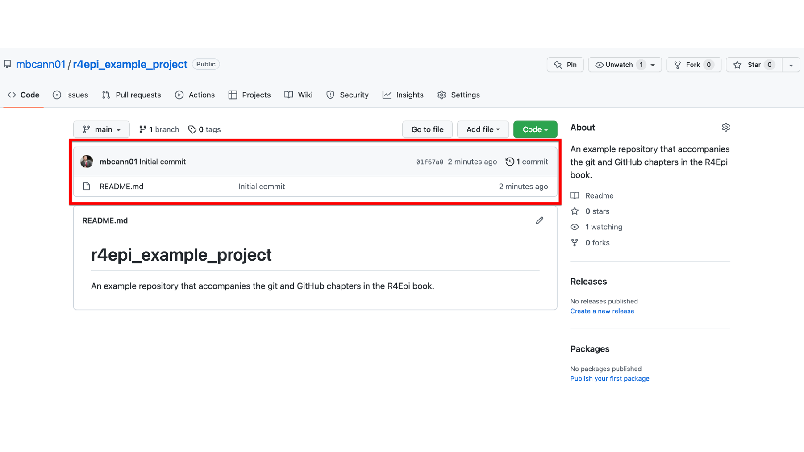
To the right of files and folders section of the homepage is the About section of the page. This section (outlined in red below) contains the repository’s description, tags, and other information that we will ignore for now.

Below the files and folders section of the page is where the README file is displayed. Notice that by default, GitHub added the repository’s name and description to the README file. Not a bad start, but we can add all kinds of cool stuff to README – including tables, figured, images, links, and other media. In fact, you can add almost anything to a README file that you can add to any other website. This is a great place to get creative and really make your project stand out!

Now, Arthur has a working GitHub repository up and running. Let’s pause for a moment to and celebrate! 🎉
Okay, celebration complete. Now, what does he do with this new GitHub repository? Well, he does the four things covered in Introduction to git and GitHub.
- He will start adding files to his repository and document their purpose and evolution with versioning.
- In the process, he will preserve his files, and by extension, his project.
- Doing so will help to make his research more reproducible.
- And make it easier for him to collaborate with others – including his future self.
Let’s start by taking a look at versioning in GitHub. As we discussed in the Versioning section of the Introduction to git and GitHub chapter, GitHub uses the word commit to refer to taking a snapshot of the state of our project, similar to how we might typically think about saving a version of a document we are working on. We saw how we could view the version history of our Google Doc by clicking File then Version history then See version history. In GitHub, we can similarly view the version history (also called the commit history) of our repository. To do so, we navigate to our repository’s homepage, and click on the word commit in the top right corner of the files section (outlined in red below).
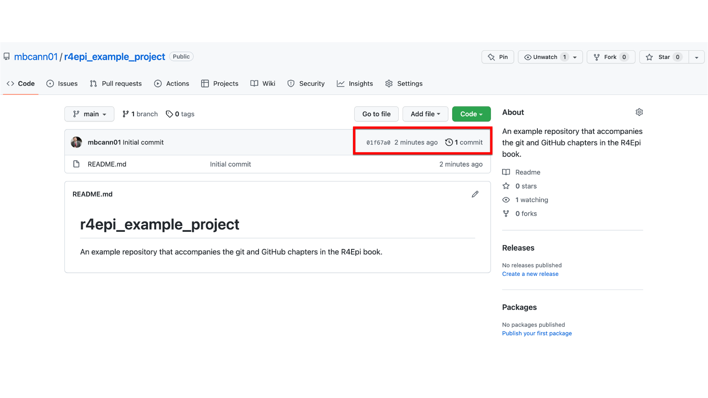
This will take us to our repository’s version history page. Currently, this repository only has one commit – the “Initial commit”. This name is used by convention in the GitHub community to refer to the first commit in the repository. The history also tells us when the commit was made and who made it. On the right side of the commit, there are three buttons.
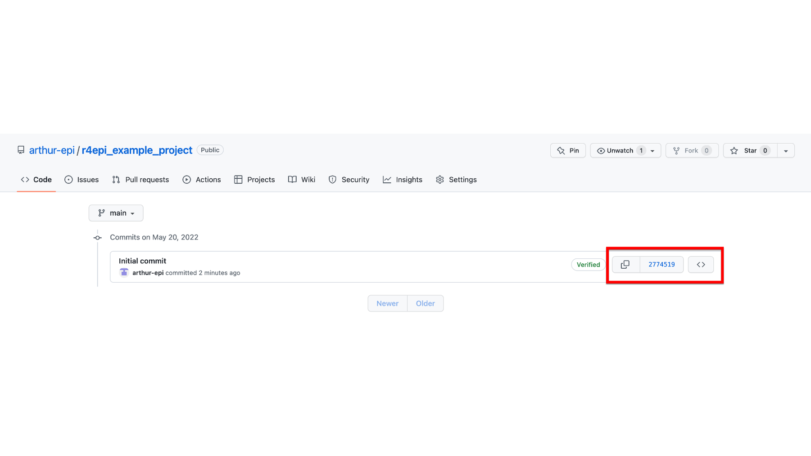
The first button on the left that looks like two partially overlapping boxes will copy the commit’s ID so that we can paste it elsewhere if we want. In GitHub, every commit is assigned a unique ID, which is also called an “SHA” or “hash”. The commit ID is a string of 40 characters that can be used to refer to a specific commit. The
274519displayed on the middle button is the first 7 characters of this commit’s ID.As noted above, the middle button is labeled with the first 7 characters of this commit’s ID -
274519. Clicking on it will take us to a new screen with the details of what this commit does to the files in the repository (i.e., additions, edits, and deletions). Arthur will click it so we take a look momentarily.The button on the far right, which is labeled with two angle brackets (
< >) will take us back to the repository’s homepage. However, the files in the repository will be set back to the state they were in when the commit was made. In this case, there is only one commit. So, there’s no difference between the current state of the repository and the state it would be in if Arthur clicked this button. However, this button can be useful. If Arthur makes some changes to a file and then later wants to see what the file looked like before he made those changes, he can use this button to take a look.
Now, Arthur will click the middle button labeled with the short version of the commit ID.
On the page he is taken to, we can see more details about what commit 274519 does to the files in the repository. The top section of the page (outlined in red below) contains pretty much the same information we saw on the previous page. The little symbol on the left that looks kind of like a backwards 4 with open circles at the ends of the lines tells us which branch we are operating on. Branches are a more advanced topic that we will discuss later. Currently, our repository only has one branch – the default main branch – and the symbol followed by the word “main” is telling us that this commit is on the main branch. To the far right of this section, there is a button that says Browse files. Clicking this button does the exact same thing as the button on the previous page that was labeled with two angle brackets (< >). Below the Browse files button, are the words 0 parents and commit 277451996a7e9a0a6e583124d762db2a9cd439a2. This tells us that this commit doesn’t have any parent commits and that the full commit ID is 277451996a7e9a0a6e583124d762db2a9cd439a2. We discussed commit ID’s above. The parent commit is the commit or commits that this commit is based on. In other words, what were the other things that happened to get us to this point? Because this is the initial commit, there are no parent commits.
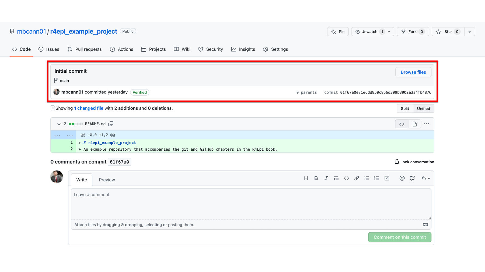
The middle section of the commit details page tells us that applying this commit to the repository changes 1 file. In that file, there are two additions and no deletions. Below this text we can see which file was changed - README.md. This is also called the diff view because we can see the differences between this version of the file and previous versions of the file. In this case, because there wasn’t a previous version of the file, we just see the two additions that were made to the file. They are the level one header that was added to the first line of the file (i.e., # r4epi_example_project) and our project’s description was added to the second line of the file. These additions were made automatically by GitHub. We know they are additions because the background color is green and there is a little plus sign immediately to their left. We know which lines of the file were changed because GitHub shows us the line number immediately to the left of the plus signs.
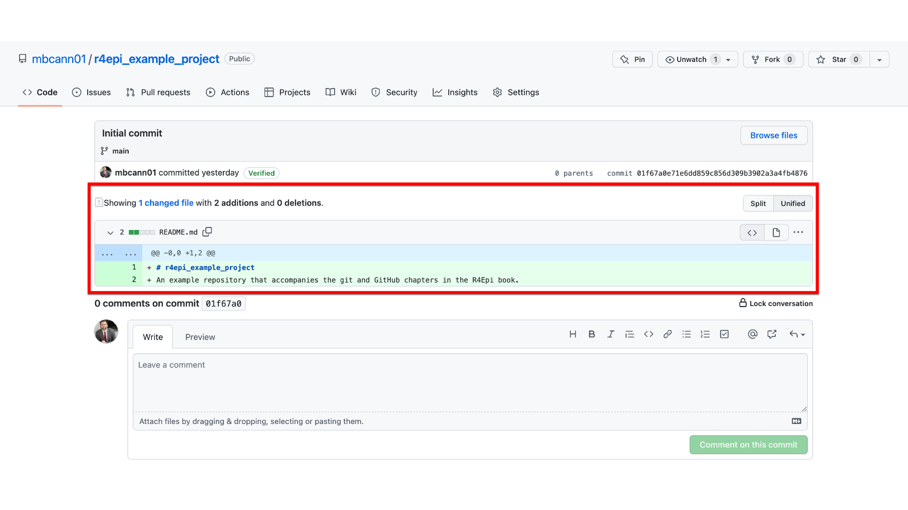
The final section of the commit details page shows us any existing comments that Arthur, or others, made about this commit. It also allows us, or others to create a new comment, using the text box.
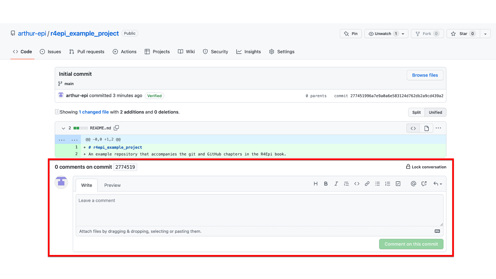
In the screenshot below, we can see an example comment. Note all the cool things features GitHub comments allow us to use. We can format the text, add bullets, add links, and even add clickable checkboxes.
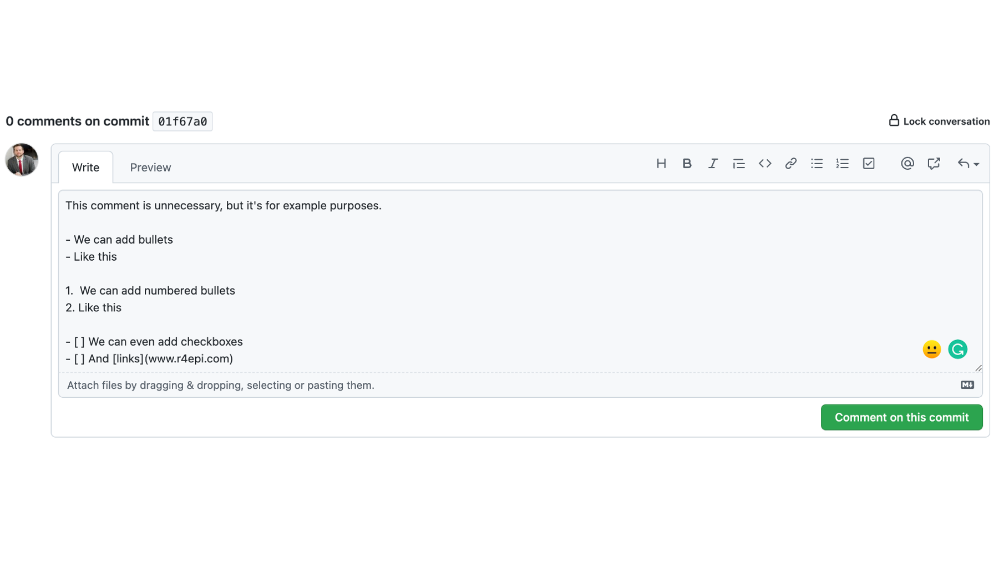
Finally, clicking the green Comment on this commit button adds our comment to the commit details page.

Let’s pause here for a moment and try to appreciate how powerful GitHub already is compared to other cloud-based file storage services like Dropbox, Google Drive, or OneDrive. Like those file storage services, all of our files are backed up and preserved in the cloud and can easily be shared with others. However, unlike Dropbox, Google Drive, and OneDrive, we can turn our repository’s homepage into a little website describing our project, we can view all the changes that have been made to our project over time, we can see which specific lines of each file have changed and how, and we can gather all comments, questions, and concerns about the files in one place. Oh, and it’s Free!
Step 2: Clone the repository to your computer
At this point, Arthur’s repository, which is just a fancy file folder, and the one file in his repository (README.md), only exist on the GitHub cloud.
🗒Side Note: What is “the GitHub cloud”? For our purposes, the cloud just refers to a specific type of computer – called a server – that physically exists somewhere else in the world, which we can connect to over the internet. GitHub owns many servers, and our files are stored on one of them. After we connect to the GitHub server, we can pass files back and forth between our computer and GitHub’s computer (i.e., the server).

Figure 39.3: GitHub Cloud.
So, how does he get the repository from the GitHub cloud to his computer so that he can start making changes to it?
He will clone the repository to his computer. Don’t get thrown off by the funny name. You can simply think “make a copy of” whenever you see the word “clone” for now. So, he will “make a copy of” the repository on his computer. However, cloning the repository actually does two very useful things at once:
- It creates a copy of our repository, and all of the files and folders in it, on our computer.
- It creates a connection between our computer and the GitHub cloud that allows us to pass files back and forth.
There are multiple possible ways we could clone our repository, but we’re going to use GitKraken in this book. If you did not already download GitKraken and connect it with your GitHub account as demonstrated at the beginning of the chapter, please do so now.
When we open GitKraken, we should see something similar to the screenshot below. Arthur will start the cloning process by clicking the Clone a repo button.

When the Repository Management dialogue box opens, he will need to make 3 changes.
Click
GitHub.comin the clone menu. This tells GitKraken that the repository he wants to clone currently lives on his GitHub account. Note that it has to be on his account in order for it to show up on this list – not someone else’s account. We will learn how to get files from someone else’s account later.Set the path where he wants the repository to be cloned to. Remember, the repository is a just a folder with some files in it. When we clone the repository to our computer, those files and folders will live on our computer somewhere. We need to tell GitKraken where we want them to live. In the screenshot below, Arthur is just cloning the repository to his computer’s desktop.
Tell GitKraken which repository on his GitHub account he wants to clone. We can use the drop-down arrow to search a list of all of our repositories. In the screenshot below, Arthur selected the
r4epi_example_projectrepository.
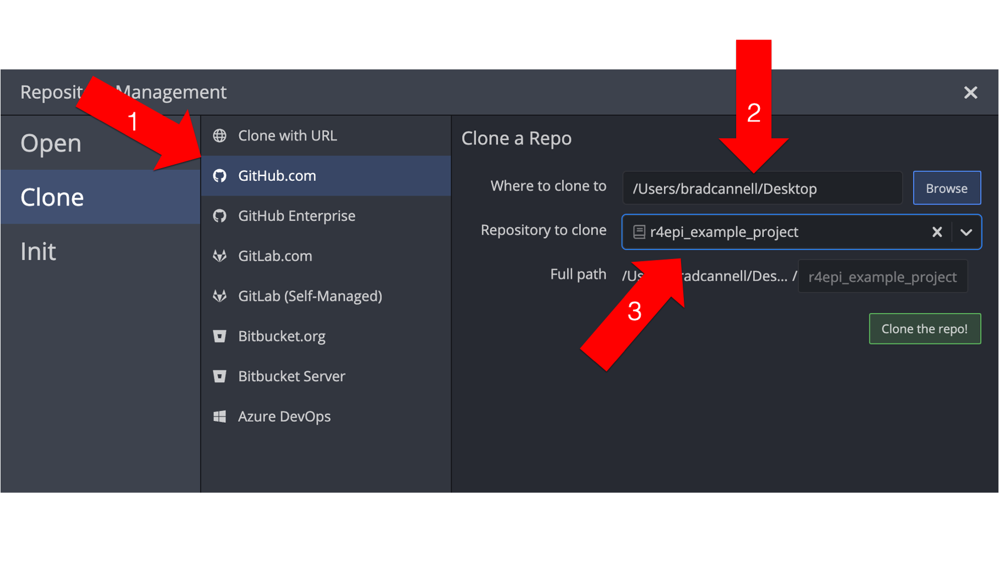
Finally, he will click the green Clone the repo! button. Now, he has successfully cloned his repository to his computer! 🎉
Before moving on, let’s pause and review what just happened.

As we discussed above, Arthur’s repository already existed on the GitHub cloud (see 39.3. In git terminology, the GitHub cloud called a remote repository, or “repo” for short. Remote repositories are just copies of our repository that live on the internet or some other network. Arthur then cloned his remote repository to his computer. That means, he made a copy of all of the files and folders on his computer. In git terminology, the repository on our computer is called a local repository.
Now that he has successfully cloned his repository, he should be able to view it in two different ways.
First, he should be able to see his repository’s file folder on his desktop (because that’s the location he chose above).
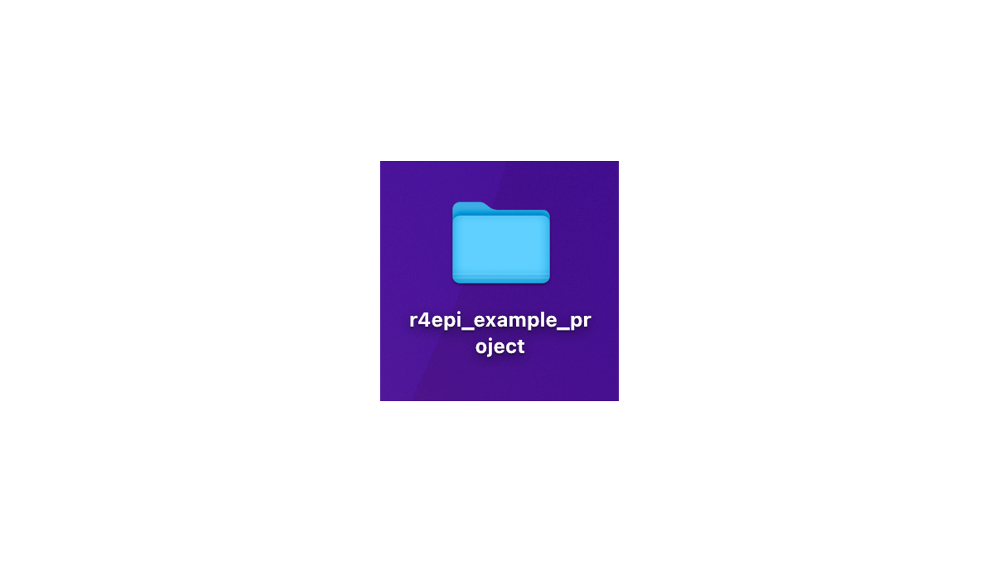
Second, he should be able to open a tab in GitKraken with all the versioning information about his repository.

Let’s pause here and watch a brief video from GitKraken that orients us to the GitKraken user interface. For now, the first three minutes of the video is all we need. There may be some unfamiliar terms in the video. Don’t stress about it! We will cover the most important parts after the video and learn some of the other terms in future examples.
Moving back to Arthur’s repository, we can see that the repository graph in the middle section of the user interface has only on commit – the initial commit. This matches what we saw on GitHub.

If we zoom in on the upper left corner of the left sidebar menu (outlined in red below), we can see that GitKraken is aware of two different places where the repository lives. First, it tells us that Arthur has a local repository on his computer with one branch – the main branch. Next, it tells us that there is one remote location for the repository – called “origin” – with one branch – the main branch.
The term “origin” is used by convention in the git language to refer to the remote repository that we originally cloned from. It uses the nickname “origin” instead of using the remote repository’s full URL (i.e., web address). Arthur could change this name if he wanted, but there’s really no need.

Another useful thing we can see in the current view, is that the local repository and the remote repository on GitHub are in sync. Meaning, the files and folders in the repository on Arthur’s computer are identical to the files and folders in the repository on the GitHub cloud. We know this because the little white and gray picture that represents the remote repository and the little picture of the laptop that represents the local repository are located side-by-side on the repository graph (see red arrow below). When we have made changes in one location or another, but haven’t synced those changes to the other location, the two icons will be in different rows of the repository graph. We will see an example of this soon.

Step 3: Add an R project file to the repository
This step is technically optional, but we highly recommend it! We introduced R projects earlier in the book. Arthur will go ahead and add an R project file to his repository now. This will make his life easier later. To create a new R project, he just needs to click the drop-down arrow next to the words Project: (None) to open the projects menu. Then, he will click the New Project... option.

That will open the new project dialogue box. This time, he will click the Existing Directory option instead of clicking the New Directory option. Why? Because the directory (i.e., folder) he wants to contain his R project already exists on his computer. Arthur cloned it to his desktop in [step 2][Step 2: Clone the repository] above.

All Arthur has to do now, is tell RStudio where to find the r4epi_example_project directory on his computer using the Browse... button. In this case, on his desktop. Finally, he will click the Create Project button.

Step 4: Update and commit gitignore
Let’s take a look at Arthur’s RStudio files pane. Notice that there are now three files in the project directory. There is the README file, the .Rproj file, and a file called .gitignore. RStudio created this file automatically when Arthur designated the directory as an R project.
Outside of the name – .gitignore – there is nothing special about this file. It’s just a plain text file. But naming it .gitignore tells the git software that it contains a list of files that git should ignore. By ignore, we mean, “pretend they don’t exist.”

Arthur will now open the .gitignore file and see what’s there.

Currently, there are four files on the .gitignore list. These files were added automatically by RStudio to try to help him out. Tracking versions of these files typically isn’t useful. Because these files are on the .gitignore list, git and GitHub won’t even notice if Arthur creates, edits, or deletes any of them. This means that they also won’t ever be uploaded to GitHub.
At this point, Arthur is going to go ahead and add one more file to the .gitignore list. He will add .DS_store to the list. .DS_store is a file that the MacOS operating system creates automatically when a Mac user navigates to a file or folder using Finder. None of that really matters for our purposes, though. What does matter is that there is no need to track versions of this file and it will be a constant annoyance if Arthur doesn’t ignore it.
If Arthur were using a Windows PC instead of a Mac, the .DS_store file should not be an issue. However, adding .DS_store to .gitignore isn’t a bad idea even when using a Windows PC for at least two reasons. First, there is no harm in doing so. Second, if Arthur ever collaborates with someone else on this project who is using a Mac, then the .DS_store file could find its way into the repository and become an annoyance. Therefore, we recommend always adding .DS_store to the .gitignore list regardless of the operating system you personally use.
Adding .DS_store (or any other file name) to the .gitignore list is as simple as typing .DS_store on its own line of the .gitignore file and clicking Save.

Typically, the next thing we would do after creating our repository is to start creating and adding the files we need to complete our analyses.
Now, Arthur will open GitKraken so we can take a look. Notice that Arthur’s GitKraken looks different than it did the last time we viewed it. That’s because we’ve been making changes to the repository. Specifically, we’ve added two files since the last commit was made. There are at least two ways we can tell that is the case.
First, the repository graph in the middle section of the user interface has now has two rows. The bottom row is still the initial commit, but now there is a row above it that says // WIP and has a + 2 symbol. WIP stands for work in progress and the + 2 indicates that there are two files that have changed (in this case, they were added) since the last commit. So, Arthur has been working on two files since his last commit.
Additionally, the commit panel on the right side of the screen shows that there are two new uncommitted and unstaged files in the directory. They are .gitignore and r4epi_example_project.Rproj.
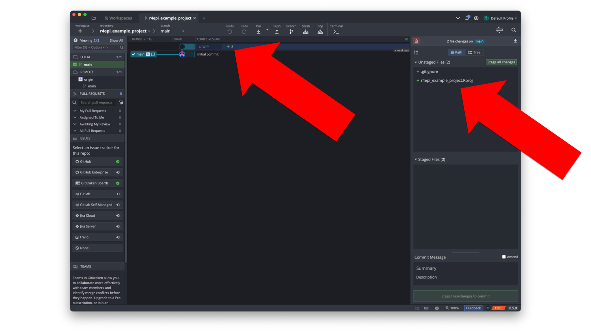
At this point, Arthur wants to take a snapshot of the state of his repository. Meaning, he wants to save a version of his repository as it currently exists. To do that, he first needs to stage the changes since the previous commit that he wants to be included in this commit. In this case, he wants to include all changes. So, he will click the green Stage all changes button located in the commit panel.

After clicking the Stage all changes button, the two new files are moved down to the Staged Files window of the commit panel.

Next, Arthur will write a commit message. Just like there are best practices for writing R code, there are also best practices for writing commit messages. Here is a link to a blog post that we think does a good job of explaining these best practices: https://cbea.ms/git-commit/.
The first line is called the commit message. You can think of the commit message as a brief summary of what this commit does to the repository. This message will help Arthur and his collaborators find key commits later in the future. In this context, “brief” means 72 characters or less. GitKraken tries to help us out by telling us how many characters we’ve typed in our commit message. Additionally, the commit message should be written in the imperative voice – like a command. Another way to think about it is that the commit message should typically complete the phrase, “If applied, this commit will…”. The screenshot below shows that Arthur wrote Add Rproj and gitignore to project (red arrow 1).
In addition to the commit message, there is also a description box we can use to add more details about the commit. Sometimes, this is unnecessary. However, when we do choose to add a description, it is best practice to use it to explain what the commit does or why we chose to do it rather than how it does whatever it does. That’s in the code. In the screenshot below, you can see that Arthur added some bulleted notes to the description (red arrow 2).
Finally, Arthur will click the green commit button at the bottom of the commit panel (red arrow 3). This will commit (save) a version of our repository that includes the changes to any of the files in the Staged Files window.

And here is what his GitKraken screen looks like after committing.

Let’s pay special attention to what is being displayed in a couple of different areas. We’ll start by zooming in on the commit panel.
At the top of the commit panel, we can see the short version of the commit ID – 4a394b. Below that, we can see the commit message and description. Below that, we can see who created the commit and when. This tends to be more useful when we are collaborating with others. To the right of that information, GitKraken also shows us the commit ID for this commit’s parent commit – 277451. Finally, it shows us the file changes that this commit applies to our repository. More specifically, it shows us the changes that commit 4a394b makes to commit 277451.

At this point, you may be wondering what this whole parent-child thing is and why we keep talking about it. The diagram below is a very simple graphical representation of how git views our repository. It views it as a series of commits that chronologically build our repository when they are applied to each other in sequence. Familial terms are often used in the git community to describe the relationship between commits. For example, in the diagram below commit 4a394b is a child of commit 288451. Child commits are always more recent than parent commits. This knowledge is not incredibly useful to us at this point, but it can be helpful when we start to learn about more advanced topics like merging commits. For now, just be aware of the terminology.

It is also important to point out that Arthur’s most recent commit (4a394b) only exists in his local repository. That is, the repository on his computer. He has not yet shared the commit – or the new files associated with the commit – to the remote repository on GitHub.

How do we know? Well, one way we can tell is by looking at Arthur’s GitKraken window. In the repository graph, the local repository (i.e., the little laptop icon) and the remote repository (i.e., the little gray and white icon) are on different rows. Additionally, there is a little 1 next to an up arrow displayed to the left of the main branch of our local repository in the left panel of GitKraken. Both of these indicate that the most recent commits contained in each repository are different. Specifically, that the local repository is one commit ahead of the remote repository.
This concept is important to understand. In Google Docs, when we made a change to our document locally, that change was automatically synced to Google’s servers. We didn’t have to do anything to save/create a version of the document. We had to put in a little effort if we wanted to name a particular version, but the version itself was already saved – identified using a date-time stamp. Conversely, git does not automatically make commits (i.e., save snapshots of the state of the files in our repository), nor does our local repository automatically sync up with our remote repository (in this case, GitHub). We have to do both of these things manually. This will create a little extra work for us, but it will also give us a lot more control.

As one additional check, Arthur can go look at the repository’s commit history on GitHub. As shown in the screenshot below, the commit history still only shows one commit – the initial commit.

Let’s quickly pause and recap what Arthur has done so far.

First, Arthur created a repository on GitHub. It was a remote repository because he accesses it over the internet. Then, he cloned (i.e., made a copy of) the remote repository to his computer. This copy is referred to as a local repository. Next, Arthur made some changes to the repository locally and committed them. At this point, the local repository is 1 commit ahead of the remote repository, and the changes that Arthur made locally are not currently reflected on GitHub.
So, how does Arthur sync the changes he made locally with GitHub? He will push them to GitHub, which GitKraken makes incredibly easy. All he needs to do is click the Push button at the top of his GitKraken window (see below).

After doing so, we will once again see some changes. What changes do you notice in the screenshot below?

In the repository graph, the local repository (i.e., the little laptop icon) and the remote repository (i.e., the little gray and white icon) are back on the same row. Additionally, the little 1 next to an up arrow is no longer displayed in the left panel. Both of these changes indicate that the most recent commits contained in each repository are the same.
And if Arthur once again checks GitHub…

He will now see that the GitHub repository also has two commits. He can click on the text that says 2 commits to view each commit in the commit history.
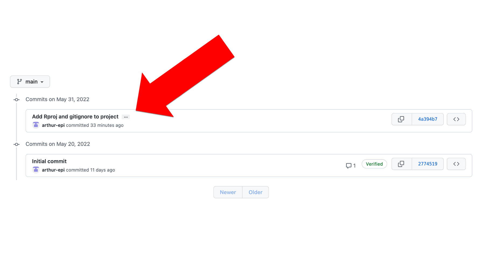
In the commit history, he can now see commit 4a394b7. Let’s take another pause here and recap.

First, Arthur created a repository on GitHub. Then, he cloned the remote (i.e., GitHub) repository to his computer. Next, Arthur made some changes to the repository locally and committed them locally. Finally, he pushed the local commit up to GitHub. Now, his GitHub repository and local repository are in sync with each other.
We realize that it probably seems like it took a lot of work for Arthur to get everything set up. But in reality, all of the steps up to this point will only take a couple of minutes once you’ve gone through them a few times.
Step 5: Keep adding and committing files
At this point, Arthur has his repositories all set up and is ready to start rocking and rolling on his actual data analysis. To round out this example, Arthur will add some data to his repository that he will eventually analyze using R.

The screenshot above shows that Arthur created a new folder inside the R project directory called data. He created it in the same way he would create any other new folder in his computer’s operating system. Then, he added a data set to the data folder he created. This particular data set happens to be stored in an Excel file named form_20.xlsx.
Now, when Arthur checks GitKraken, this is what he sees in the commit panel.

Just like before, GitHub is telling Arthur that he has a new unstaged file in the repository. Stop for a moment and think. What should Arthur do next?
Was your answer, “stage and commit the new file”? If so, slow down and think again. Remember, in general, we don’t ever want to commit our research data to our GitHub repository. GitHub is not typically considered secure or private. So, how can Arthur keep the data in his local repository so that he can work with it, keep his local repository synced with GitHub, but make sure the data doesn’t get pushed up to GitHub?
Do you remember earlier when Arthur told git and GitHub to ignore the .DS_Store file? In exactly the same way, Arthur can tell git and GitHub to ignore this data set. And once it’s ignored, it won’t ever be pushed to GitHub. Remember, our local git repository only includes files it’s tracking in commits, and it only pushes commits (and the files included in them) up to GitHub.
In the screenshot below, Arthur added data/ to line 6 of the .gitignore file. He could have added form_20.xlsx instead. That would have told git to ignore the form_20.xlsx data set specifically. However, Arthur doesn’t want to push any data to GitHub – including any data sets that he may add in the future. By adding data/ to the .gitignore file, he is telling git to ignore the entire folder named data and all of the files it contains – now and in the future.

After saving the updated .gitignore file, the commit pane in GitKraken changes once again.

The new file data/form_20.xlsx is no longer showing up as an unstaged change. Instead, the only unstaged change showing up is the edited .gitignore file. We can tall that the changes to the .gitignore file are edits – as opposed to adding the file for the first time – because there is a little pencil icon to the left of the file name instead of a little green plus icon. Now what should Arthur do next?
Was your answer, “stage and commit the edited file”? If so, you are correct! Now it is safe for Arthur to go ahead and commit these changes.
After doing so, he can see that the GitHub repository contains 3 commits. Additionally, as shown the red box below, the data folder is nowhere to be found among the files contained in the GitHub repository.

Arthur will now add one final file to the r4epi_example_project as part of this example. He will add an R markdown file with a little bit of R code in it. The code will import form_20.xlsx into the global environment as a data frame.

An then he will commit and push the data_01_import.Rmd to GitHub in the same way he committed and pushed previous files to Github.

Arthur can continue adding files to his local repository and then pushing them to GitHub in this fashion for the remainder of the time he is working on this project, and the introduction to git and GitHub chapter discusses why he should consider doing so.
After going through this example, many students have three lingering questions:
How often should we commit?
How often should we push our commits to GitHub?
If we can’t use GitHub to share our data, how should we share data?
We will answer questions 1 & 2 immediately below. We will answer the third question in the next example.
39.6 Committing and pushing
As we are learning to use git and GitHub, it is reasonable to ask how often we should commit our work as we go along. For better or worse, there is no hard-and-fast rule we can give you here. In Happy Git and GitHub for the useR, Dr. Jennifer (Jenny) Bryan writes that we should commit “every time you finish a valuable chunk of work, probably many times a day.”13 This seems like a pretty good starting place to us.
Of course, a natural follow-up question is to ask how often we should push our commits to GitHub. We could automatically push every commit we make to GitHub as soon as we make it. However, this isn’t always a good idea. It is much easier to edit or rollback commits that we have only made locally than it is to edit or rollback commits that we’ve pushed to our remote repository. For example, if we accidentally include a data set in a commit and push it to GitHub, this is a much bigger problem than if we accidentally include a data set in a commit and catch it before we push to GitHub. For this reason, we don’t suggest that you automatically push every commit you make to GitHub. So, how often should you push? Well, once again, there is no hard-and-fast rule. And once again, we think Dr. Bryan’s advice is a good starting point. She writes, “Do this [push] a few times a day, but possibly less often than you commit.”13 It is also worth noting that how often you commit and push will also be dictated, at least partially, by the dynamics of the group of people who are contributing to the repository. So far, we have really only seen a repository with a single contributor (i.e., Arthur Epi). That will change in the next example.
The advice above about committing and pushing may seem a little vague to you right now. It is a little vague. We apologize for that. However, we believe it’s also the best we can do. On the bright side, as you practice with git and GitHub, you will eventually fall into a rhythm that works well for you. Just give it a little time!
39.7 Example 3: Contribute to a research project
When our research assistants begin helping us with data management and analysis projects, we often have them start by going to the project’s GitHub repository to read the existing documentation and clone all the existing code to their computer. This example is going to walk through that process step-by-step. For demonstration purposes, we will work with the example repository that our fictitious research assistant named Arthur Epi created in Example 2 above.
🗒Side Note: It’s probably worth noting that in most real-world scenarios the roles here would be reversed. That is, we (Brad or Doug) would have created the original repository and Arthur would be working off of it. However, the example repository above was already created using Arthur’s GitHub account, and we will continue to work off of it in this example. If you are a research assistant working with us (i.e., Brad or Doug) in real life, and using this example to walk yourself through getting started on a real project, you should insert yourself (and your GitHub account) into Brad’s role (and GitHub account) in the example below.
In this example, we’re going to work collaboratively with Arthur on the r4epi_example_project. Arthur could have just emailed us all of the project files, but sometimes that might be many files, some of them may be very large, and he runs the risk of forgetting to send some of them by accident. Further, every time any of the contributors adds or updates a file, they will have to email all the other contributors the new file(s) and an explanation of the updates they’ve made. This process is typically inefficient and error prone. Conversely, Arthur could set up a shared folder on a cloud-based file storage service like Dropbox, Google Drive, or OneDrive. Doing so would circumvent the issues caused by emailing files that we just mentioned (i.e., many files, large files, forgetting files, and manually sending updates). However, Dropbox, Google Drive, and OneDrive aren’t designed to take advantage of all that git and GitHub have to offer (e.g., project documentation, versioning and version history, viewing differences between code versions, issue tracking, creating static websites for research dissemination, and more). Because Arthur created his repository on GitHub, all of the files and documentation we need to get started assisting him are easily accessible to us. All, he has to do is send us the repository’s web address, which is https://github.com/arthur-epi/r4epi_example_project.
After navigating to a GitHub repository, the first thing we typically want to do is read the README. It should have some useful information for us about what the repository does, how it is organized, and how to use it. Because this is a fictitious, minimal example for the book, the current README in the r4epi_example_project project isn’t that useful, impressive, or informative. Matias Singers maintains a list of great READMEs at the following link that you may want to check out: https://github.com/matiassingers/awesome-readme. If you want to see an example README from a real research project that we worked on, you can check out this link: https://github.com/brad-cannell/detect_pilot_test_5w.
After we read over the README file, we are ready to start making edits and additions to the project. But how do we do that?
While it is technically possible for us to edit code files directly on GitHub (see Contributing to R4Epi), this is typically only a good idea for extremely minor edits (e.g., a typo in the documentation). Typically, we will want to make a copy of all the code files on our computer so that we can experiment with the edits we are making. Said another way, we can suggest edits to R code files directly on GitHub, but we can’t run those files in R directly on GitHub to make sure they do what we intend for them to do. To test our changes in R, we will need all of the repository’s files on our local computer. And how do we do that?
39.7.1 Forking a repository
If your answer the question above was, “we clone the r4epi_example_project repository to our computer” you were close, but that isn’t our best option here. While we technically can clone public repositories that aren’t on our account, we can’t push any changes to them. And this is a good thing! Think about it, do we really want any person out there on the internet to be able to make changes to our repository anytime they want without any oversight from us? No way!

In this case, forking the repository is going to be the better option. This is another funny name, but we are once again just talking about making a copy of the repository. However, this time we are copying the repository from the original GitHub account (i.e., Arthur’s) to our GitHub account. With cloning, we were copying the repository from the original GitHub account to our computer. Do you see the difference? Let’s try to visualize it.

The purple arrow above indicates that we are forking (i.e., making a copy of) the original r4epi_example_project repository on Arthur’s GitHub account to Brad’s GitHub account. And doing so is really easy. All Brad has to do is log in to GitHub and navigate to Arthur’s r4epi_example_project repository located at https://github.com/arthur-epi/r4epi_example_project. Then, he needs to click on the Fork button located near the top-right corner of the screen.

Then Brad will click the green Create fork button on the next page.

And after a few moments, this will create an entirely new repository on Brad’s GitHub account. It will contain an exact copy of the all the files that were on the repository in Arthur’s GitHub account, but Brad is the owner of this repository on his account (shown in the screenshot below).

Because Brad is the owner of this repository, he can clone it to his local computer, work on it, and push changes up to GitHub in exactly the same way that Arthur did in the example above. Just to be clear, the changes that Brad pushes to his GitHub repository will have no effect on Arthur’s GitHub repository.
🗒Side Note: As we’ve pointed out multiple times in this chapter, we generally do not want to upload research data to GitHub. Why? Because it isn’t typically considered private or secure. However, in order for Brad to do work on this project, he will need to access the data somehow. This will require Arthur to share to data with Brad through some means other than GitHub. Different organizations have different rules about what is considered secure. For example, it may be an encrypted email or it may be a link to a shared drive on a secure server. However the data is shared, it is important for Brad to create the same file structure on his computer that Arthur has on his computer. Otherwise, the R code will not work on both computers. Remember from the example above that Arthur created a data/ folder in his local repository and he moved the form_20.xlsx data to that folder. Then, in the data_01_import R markdown file, he imports the data using the relative path data/form_20.xlsx. In the chapter on file paths we discussed the advantages of using relative file paths when working collaboratively. Just remember, in order for this relative file path to work identically on Arthur’s computer and Brad’s computer, the folder structure and file names must also be identical. So, if Brad put the form_20.xlsx data in a folder in his local repository called data sets/ instead of data/, then the code in the data_01_import R markdown file would throw an error.

Notice that in the diagram above, Arthur’s original repository is totally unaffected by any changes that Brad is pushing from his local computer to the repository on his GitHub account. There is no arrow from Brad’s remote repository going into Arthur’s remote repository. Again, this is a good thing. Literally anyone else in the world with a GitHub account could just as easily fork the repository and start making changes. If they also had the ability to make changes to the original repository at will, they could potentially do a lot of damage!
However, in this case, Arthur and Brad do know each other and they are working collaboratively on this project. And at some point, the work that Brad is doing needs to be synced up with the work that Arthur is doing. In order to make that happen, Brad will need to send Arthur a request to pull the changes from Brad’s remote repository into Arthur’s remote repository. This is called a pull request.

39.7.2 Creating a pull request
To make this section slightly more realistic, let’s say that Brad adds some code to data_01_import.Rmd. Specifically, he adds some code that will coerce the date_received column from character strings to dates (code below).

Then, Brad commits the changes and pushes them up to his GitHub account. Now, when he checks his GitHub account he can see that his remote repository is 1 commit ahead of Arthur’s remote repository. And that makes sense, right? Brad just updated the code in data_01_import.Rmd, committed that changed, and pushed the commit to his GitHub account, but nothing has changed in the repository on Arthur’s GitHub account.

Now, Brad needs to create a pull request. This pull request will let Arthur know that Brad has made some changes to the code that he wants to share with Arthur. To do so, Brad will click Contribute and then click the green Open pull request button as shown below.

The top section of the next screen, which is outlined in red below, allows Brad to select the repository and branch on his GitHub account that he wants to share with Arthur (to the right of the arrow). More specifically, he is sending a request to Arthur asking him to merge his code into Arthur’s code. In this case, the code he wants to ask Arthur to merge is on the main branch of the brad-cannell/r4epi_example_project repository (Brad’s repository only has one branch – the main branch – at this point). To the left of the arrow, Brad can select the repository and branch on Arthur’s GitHub account that he wants to ask Arthur to merge the code into. In this case, the main branch of the arthur-epi/r4epi_example_project repository (Arthur’s repository only has the main branch at this point as well).
Below the red box, GitHub is telling Brad about the commits that will be sent in this pull request and the changes that will be made to Arthur’s files if he merges the pull request into his repository. In this case, only one file in Arthur’s repository would be altered – data_01_import.Rmd. Below that, Brad can see that the exact differences between his version of data_01_import.Rmd and the version that currently exists in Arthur’s repository. How cool is that that Brad and Arthur can actually see exactly how this pull request changes the file state down to individual lines of code?
Because Brad is satisfied with what he sees here, he clicks the green Create pull request button shown in the middle right of the screenshot below.

Let’s pause here and get explicit about two things.
As we’ve tried to really drive home above, this pull request will not automatically make any changes to Arthur’s repository. Rather, it will only send Arthur Brad’s code, ask him to review it, and then allow him to choose whether to incorporate it into his repository or not.
Pull requests are sent at the branch level not at the file level. Meaning, if Arthur accepts Brad’s pull request, it will make all of the files on his main branch identical to all of the files on Brad’s main branch (the main branch because that is the branch Brad chose in the screenshot above – and currently the only branch in either repository). In this case, that means that the only file that would change as a result of copying over the entire branch is
data_01_import.Rmd. However, if Brad had made changes todata_01_import.Rmdand another file, Arthur would only have the option to merge both files or neither file. He would not have the option of mergingdata_01_import.Rmdonly. Pull requests merge the entire branch, not specific files. We are emphasizing this because this may affect how you commit, push, and create pull requests when you are working collaboratively. More specifically, you may want to commit, push, and send pull requests more frequently than you would if you were working on a project independently.
On the next screen, Brad is given an opportunity to give the pull request a title and add a message for Arthur that give him some additional details. In general, it’s a good idea to fill this part out using similar conventions to those described above for commit messages.
After filling out the commit message, Brad will click the green Create pull request button on last time, and he is done. This will send Arthur the pull request.

The next time Arthur checks the r4epi_example_project on GitHub, he will see that he has a new pull request.

If he clicks on the text Pull requests text, he will be taken to his pull requests page. It will show him all pending pull requests. In this case, there is just the one pull request that Brad sent.

When he clicks on it, he will see a screen like the one in the screenshot below. Scanning from top to bottom, it will tell him which branch Brad is requesting to merge the code into, show him the message Brad wrote, tell him that he can merge this branch without any conflicts if he so chooses, and give him an opportunity to write a message back to Brad before deciding whether to merge this pull request or close it.

He also has the option to view some additional details by clicking the Commits tab, Checks tab, and/or Files changed tab towards the top of the screen. Let’s say he decides to click on the Files changed tab.
On the Files changed tab, Arthur can see each of the files that the pull request would change if he were to merge it into his repository (in this case, only one file). For each file, he can see (and even comment on) each specific line of code that would change. In this case, Arthur is pleased with the changes and navigates back to the Conversation tab by clicking on it.

Back on the Conversation tab (see screenshot below), Arthur has some options. If he wants more clarification about the pull request, he can send leave a comment for Brad using the comment box near the bottom of the screen. If he knows that he does NOT want to merge this pull request into his code, he can click the Close pull request button at the bottom of the screen. This will close the pull request and his code will remain unchanged. In this case, Arthur wants to incorporate the changes that Brad sent over, so he clicks the green Merge pull request button in the middle of the screen.

Then, he is given an opportunity to add some details about the changes this merge will make to the repository once it is committed. You can once again think of this message as having a very similar purpose to commit messages, which were discussed above. In fact, it will appear as a commit in the repository’s commit history.
Finally, he clicks the green Confirm merge button.

And if Arthur navigates back to his commit history page, he can see two new commits. Brad’s commit with the updated data_01_import.Rmd file, and the commit that was automatically created when Arthur merged the branches together.

Now, Arthur takes a look at data_01_import.Rmd on his computer. To his surprise, the code to coerce date_received into dates isn’t there. Why not?

Well, let’s open GitKraken on Arthur’s computer and see if we can help him figure it out. In the repository graph, Arthur’s local repository (i.e., the little laptop icon) and the remote repository (i.e., the little gray and white icon) are on different rows. Additionally, there is a little 2 next to a down arrow displayed to the left of the main branch of our local repository in the left panel of GitKraken. Both of these indicate that the most recent commits contained in each repository are different. Specifically, that the local repository is two commits behind the remote repository.

So, let’s pause here for a second and review what we’ve done so far. As shown in the figure below:
Brad made some updates to the code on his computer and then committed those changes to his local repository. At this point, his local repository is out of sync with his remote repository, Arthur’s remote repository, and Arthur’s local repository.
Next, Brad pushed that commit from his local repository up to his remote repository on GitHub. After doing so, his local repository and remote repository are synced with each other, but they are still out of sync with Arthur’s remote repository and Arthur’s local repository.
Then, Brad created a pull request for Arthur. The request was for Arthur to pull the latest commit from Brad’s remote repository into Arthur’s remote repository.
Arthur accepted and merged Brad’s pull request. After doing so, his remote repository, Brad’s remote repository, and Brad’s local repository are all contain the updated
data_01_import.Rmdfile, but Arthur’s local repository still does not.
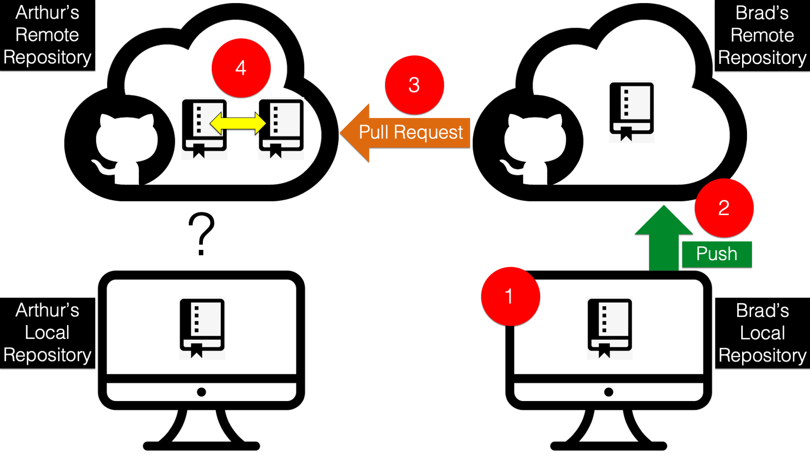
So, how does Arthur get his local repository in sync with his remote repository?
Arthur just needs to use the pull command to download the files from his updated remote repository and merge them into his local repository (step 5 below).

And GitKraken makes pulling the files from his remote repository really easy. All Arthur needs to do is click the pull button shown in the screenshot below. GitKraken will download (also called fetch) the updated repository and merge the changes into his local repository.
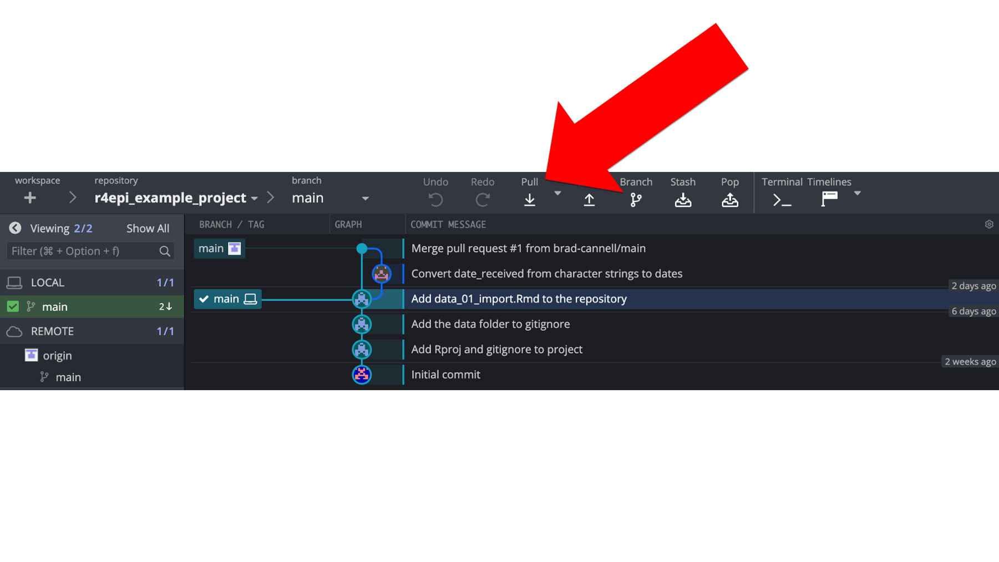
And as shown in the screenshot below, Arthur can now see that his local repository is now in sync with his remote repository once again! 🎉

But, what about Brad’s repository? Well, as you can see in the screenshot below, Brad’s remote repository is now 1 commit behind Arthur’s. Why?
This one is kind of weird/tricky. Although the code in Brad’s repository is now identical to the code in Arthur’s repository, the commit history is not. Remember, Arthur’s commit history from above? When he merged Brad’s code into his own, that automatically created an additional commit. And that additional commit does not currently exist in Brad’s commit history. It’s an easy fix though!

All Brad needs to do is a quick fetch from Arthur’s remote repository to merge that last commit into his commit history, and then pull it down to his local repository.

To do so, Brad will first click Fetch upstream followed by the green Fetch and merge button.

After a few seconds, GitHub will show him that his remote repository is now synced up with Arthur’s remote repository. All he as to do now is a quick pull in GitHub.

And now we have seen the basic process for collaboratively coding with git and GitHub. Don’t feel bad if you are still feeling a little bit confused. Git and GitHub are confusing at times even for experienced programmers. But that doesn’t mean that they aren’t still valuable tools! They are!
We also recognize that it might seem like that was a ton of steps above. Again, we went through this process slowly and methodically because we are all trying to learn here. In a real-life project with two experienced collaborators, the steps in this example would typically be completed in a matter of minutes. No big deal.
39.8 Summary
There is so much more to learn about git and GitHub, but that’s not what this book is about. So, we will stop here. We hope the examples above demonstrate some of the potential value of using git and GitHub in your project workflow. We also hope they give you enough information to get you started.
Here are some free resources we recommend if you want to learn even more:
Chacon S, Straub B. Pro Git. Second. Apress; 2014. Accessed June 13, 2022. https://git-scm.com/book/en/v2
GitHub. Getting started with GitHub. GitHub Docs. Accessed June 13, 2022. https://ghdocs-prod.azurewebsites.net/en/get-started
Bryan J. Happy Git and GitHub for the useR.; 2016. Accessed June 2, 2022. https://happygitwithr.com/index.html
Keyes D. How to Use Git/GitHub with R. R for the Rest of Us. Published February 13, 2021. Accessed June 13, 2022. https://rfortherestofus.com/2021/02/how-to-use-git-github-with-r/
Wickham H, Bryan J. Chapter 18 Git and GitHub. In: R Packages. Accessed June 13, 2022. https://r-pkgs.org/git.html